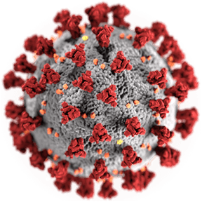

¿Qué es la COVID-19?
La COVID‑19 es la enfermedad infecciosa causada por el coronavirus que se ha descubierto a principios de enero por científicos chinos. Actualmente la COVID‑19 es una pandemia que afecta a muchos países de todo el mundo.

Los coronavirus son una gran familia de virus, la mayoría de los cuales son inofensivos para los humanos. Se sabe que cuatro tipos causan resfriados y otros dos tipos pueden
causar infecciones pulmonares graves (SARS y MERS) similares a COVID-19. Los coronavirus llevan su nombre por las puntas en forma de corona que tienen en su superficie.
Como todos los virus, necesita células de seres vivos para multiplicarse. Este virus parece apuntar a las células de los pulmones, y posiblemente a otras células del sistema respiratorio también. Las células infectadas
por el virus producirán más partículas de virus, que luego se pueden transmitir a otras personas al toser, por ejemplo.